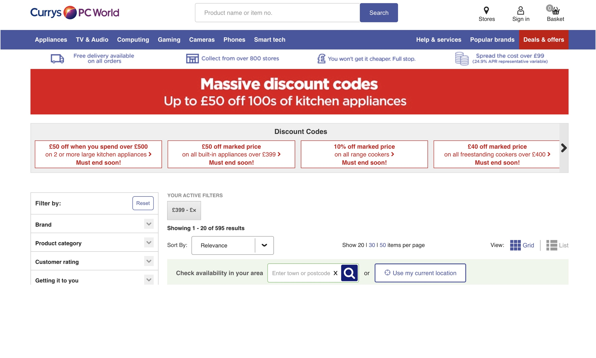
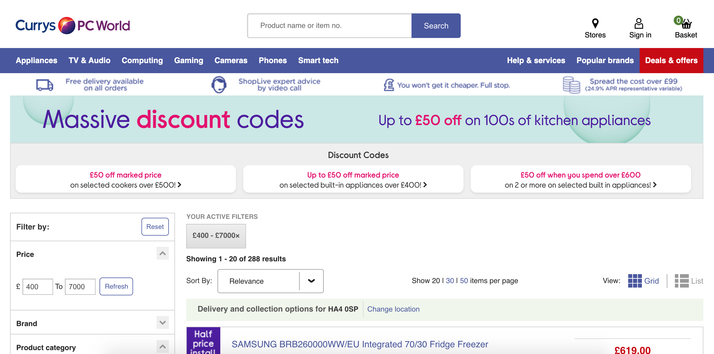
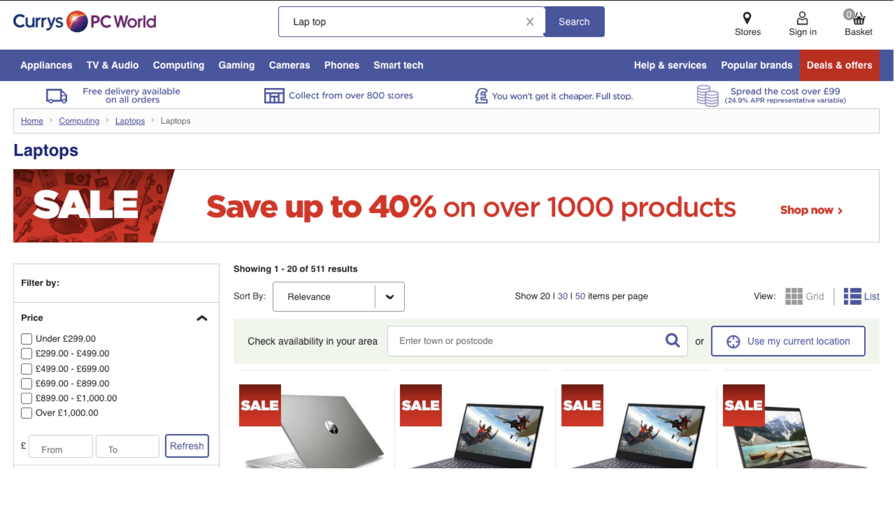
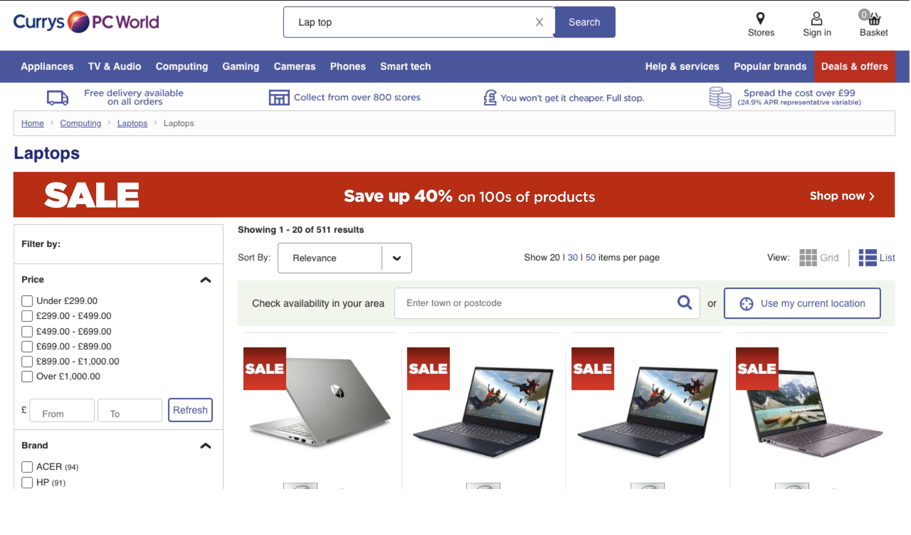
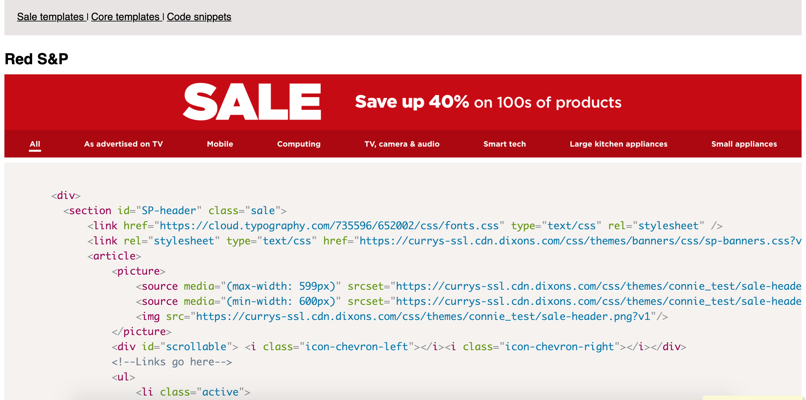

Redesign of promotional banners which are merchandised across the site. Slimmer, cleaner design gives a modern feel, reduces load time, and brings the all important products further up the page.
This process included:
Research into competitor executions
Mock-ups and templates created in Sketch
Coded using HTML & Sass
Code templates clearly presented so that the merchandising team can copy out code as needed
Monitoring impact of redesign

Orginal discount code banners.

Latest iteration in new branding.

The orginal promotional banners.

The first iteration of redesign.

Code templates created and displayed for merchandising team.